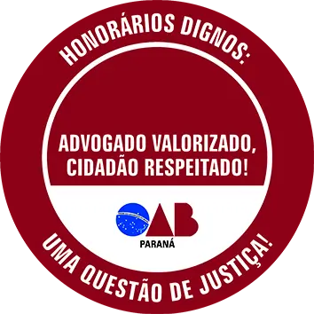

Fernando Brito
OAB Nº: 119.973/PR
Acesse com a câmera do seu celular para ligar imediatamente!
Se preferir ligue diretamente no número (45) 9 9116-4631
Meu Site
Ligar
Salvar Contato
Agendar Horário
Currículo
Compatilhar
Cartão Virtual
QR Code

Oferecemos serviços nas áreas de direito civil, previdenciário, trabalhista e criminal.
Atuamos em diversas cidades: Nova Aurora, Cafelândia, Corbélia, Cascavel, Ubiratã, Assis Chateubriand, Jesuítas, Formosa do Oeste, Campina da Lagoa, Toledo e Palotina, incluindo atendimento on-line para todo o estado do Paraná.
Atendemos de forma online, simples e rápida para todo o estado do Paraná
Você pode iniciar o atendimento pelo WhatsApp ou agendar um horário. Fazemos a análise do caso, orientamos sobre documentos e acompanhamos todo o processo à distância, com a mesma segurança e sigilo do atendimento presencial.
Atende fora de Nova Aurora? Sim, com atendimento online para todo o Paraná.
Quais áreas de atuação? Direito civil, previdenciário, trabalhista e criminal.
Como agendar? Pelo botão “Agendar Horário” ou via WhatsApp.